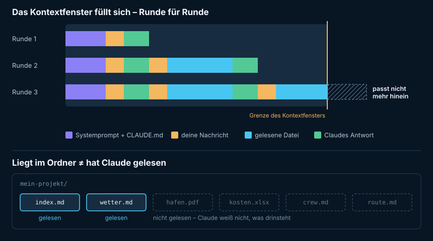

Kontextfenster
Claude hat ein begrenztes Kontextfenster – wie ein Arbeitsgedächtnis. Nur weil eine Datei im Ordner liegt, hat Claude sie noch nicht gelesen. Deshalb helfen index.md, Zusammenfassungen und CLAUDE.md: Sie sagen Claude, wo was steht.

- Bei jeder Runde wird das ganze Gespräch neu mitgeschickt. Das Fenster wird also immer voller.
- Jede gelesene Datei braucht Platz. Große PDFs besonders viel.
- Ist das Fenster voll, fasst Claude ältere Teile zusammen. Dabei gehen Details verloren.
- Neue Aufgabe? Mit
/clearstartest du mit leerem Fenster.CLAUDE.mdwird dann automatisch wieder geladen.